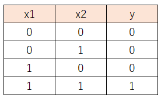
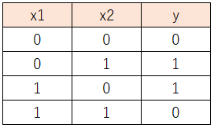

4.次の文章を読み、空欄に最もよくあてはまる選択肢をそれぞれ1つずつ選べ。
論理回路において用いられる論理ゲートのひとつであるＡＮＤゲートとは、
入力x1,x2に対して次のようなyを出力するゲートのことである。

ＡＮＤゲートは、2入力パーセプトロンの重みを調節することにより実現することができる。
同様に、ＯＲゲート、ＮＡＮＤゲートについても、２入力パーセプトロンの重みを調節して実現するこができる。
しかし、以下のような入出力関係からなるＸＯＲゲートは、2入力パーセプトロンで実現することはできない。

パーセプトロンで解くことができる問題を（ア）と呼ぶが、ＸＯＲゲートは（ア）ではない。
しかし、いくつかのパーセプトロンを多層化した（イ）を用いることで、（ア）でない問題も解くことが可能になる。
なお（イ）では、非線形な活性化関数を用いる必要がある。
| ア | A. 線形実現可能 B. 線形予測可能 C. 線形計算可能 D. 線形分離可能 |
| イ | A. 複雑パーセプトロン B. 非線形パーセプトロン C. 合成パーセプトロン D. 多層パーセプトロン |
答え Ｄ、Ｄ
【解説】
| パーセプトロンは重みを調節することによってさまざまな識別器となりますが、 パーセプトロンを使って解ける問題は、「直線を使って分離できるもの」に限られます。 （このような「直接を使って完璧に２つのクラスに分類できる問題（２クラス問題）」を 「線形分離可能」といいます）（ア＝Ｄ）） このように線形分離不可能な分類問題は、パーセプトロンを次の図のように組み合わせた 多層パーセプトロンを用いると解決できるようになります。（イ＝Ｄ）。 実はこの多層パーセプトロンが、ニューラルネットワークの原型なのです。 |
 戻る
戻る 一覧へ
一覧へ 次へ
次へ